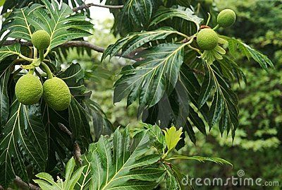

The commonly known breadfruit tree actually goes by the scientific name "Artocapus altilis"
The average breadfruit tree can live up 50 or more years in favourable conditions, achieving heights of 20 metres or more in the space of 20 years or less
The breadfruit tree originated in New Guinea and the Ido-Malay region. The trees were then spread around by the travelling Europeans in the 1500s.
Breadfruit is packed with nutrients, which lower cholesterol, fight infections, promote youthful skin and healthy hair. Since it contains a good amount of fiber that reduces the rate of glucose absorption, it is a diabetic friendly food. It is brimming with the heart friendly nutrient potassium that regulates blood pressure and heart rate.
FUN FACT!- Here in Barbados, breadfruits are usually referred to as "yellow meat".